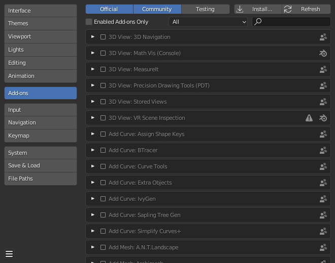
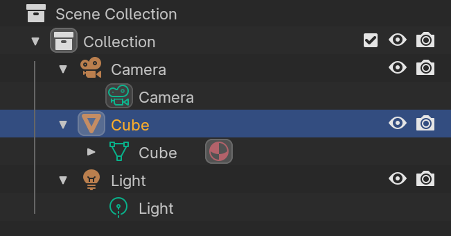

Wallet Notes
Optimizing Note Decryption
See DAGSync: Graph-aware Zcash wallets by str4d.
TLDR: as we're syncing the wallet, we normally scan forwards prioritizing both sends and receives the same. Instead we can optimize this for immediate spendability (despite not having full received balance). Assume we have the entire blockchain state but haven't yet trial decrypted all notes.
- Nullifier Tracking: for every note, look for a nullifier. If it doesn't exist then the note has not yet been spent.
- Targeted Decryption: when the nullifier exists, then check the output notes of that transaction. One of these is likely to be change we can spend.
Additionally:
- Source Discovery: go backwards from the latest block and trial decrypt outputs. Then for those decrypted outputs, check their nullifiers (as per nullifier tracking above).
- History Discovery: simultaneously another scan goes forwards from the last sync point until it meets the source discovery (going backwards).
Knitting is where periodically wallets will gather all unspent coins and construct a new one. It will use the memo field to indicate to wallet sync that it doesn't need to go back any further than this point.
However since wallets keep track of their own coins (assuming a wallet isn't shared between 2 devices) which is the majority usecase, then this technique is less relevant since you know which coins you've spent.
Modules and Addons
The current standard model for smart contract cryptocurrencies is to abuse the web browser's plugin architecture. This has several undesirable effects:
- Dependency on js.
- Poor security model.
- Centralized frontends. The frontend can be loaded via IPFS (usually via a
gateway), but it still needs to access a hosted RPC. Users can deploy their
own and then configure the RPC URL but this is complicated so it rarely
happens. Then there are projects for "decentralized RPC" but this is lipstick
on a cow (the bloated browser).
- Hosted frontends are a legal risk. See TornadoCash.
- Limitations of the browser addon architecture. I cannot for example run a p2p
network and must go through some centralized "solution" (not a solution but
actually an anti-pattern).
- Firefox used to have a much stronger XUL framework which enabled cool things like remote CLI control of the browser or interfacing with other tools, but they deleted this and just put Chrome's addon architecture which made a whole load of addons no longer possible.
- Non-portable. Running metamask ethereum apps on mobile is generally
non-trivial. Wallets should easily work across all platforms and devices
seamlessly.
- Metamask has a separate standalone Android app which is non-ideal since now the big app has 2 separate impls. Ideally there is just one big app since diverging impls lead to fragmentation.
- The architecture is specific to browsers and non-portable to other software unless they include a browser engine like WebKit which is a huge chunk of code.
Benefits of hackable software are:
- Small tools, not big apps. The software is just a minimal shell. All functionality exists as plugins.
- User extendable, which allows community control over the direction and
use of the software.
- Niche users can find a plugin for their edgecase which might not be supported in the big app.
- Easy entry for devs that have an idea compared to making a new app or tool.
- Blender has a built in Python terminal, and the code is fully introspectable
which allows exploring the codebase and calling
help(foo)on objects.
- Blender has a built in Python terminal, and the code is fully introspectable
which allows exploring the codebase and calling
- Most major successful products are hackable. Important examples: WinAmp, Blender3D, Firefox.
Addons
Addons are sandboxed WASM code which has tightly controlled permissions. They are untrusted third party 'apps'.
Most functionality are the client code for wallets. For example we want to use the DAO contract so we download an addon. An addon may provide this functionality:
- An API that can be called by other addons.
- A UI schema for building an interface.
- Transaction scanner that can do things like trial decryption of notes, maintaining any client specific state.
Addons should be sandboxed. By default access to all host functions is blacklisted, and they must be explicitly whitelisted to call any function, including other addons.
We can run addons in separate threads so that if one of them crashes, the host application can simply kill the process. Addons can then run alongside each other without any effect on each other. However this leads to increased memory usage from the overhead of having every addon spawning a new thread, so we may wish to use WASM functionality to interpret addon functions that take too long.
There is a special function inside the WASM which is called on startup
called requested_permissions(). This is used to request the permissions
from the user who then adds it to the whitelist for this addon.
While the requested permissions will be a list of namespaced functions,
the UI will simply display these as something simple to the user like
"manage a database" or "use event graph" (see below).
Addons are loaded dynamically and can be downloaded from a source such as the DHT network.


Blender's addon browser looks much better than Firefox's.
When creating addon UIs, there should be a way to allow live reloading of the UI for convenient design, and possibly the impl too which makes live debugging possible.
Addon Maintenance
Overtime there will be a tension between upgrading the core API and maintaining a large ecosystem of addons. Therefore there should be a centralized git repo for all addons listed in the wallet. Addon authors can tag releases and request their addon be updated downstream by the wallet maintainers.
This way when large breaking API changes are needed, we have the ability to:
- Simultaneously update all addons at once.
- Communicate with addon authors to coordinate any changes needed such as architectural ones.
- Ensure a canonical repository of vetted addons.
This is similar to how Linux distributions maintain packages.
Addons must also have contact details so darkfi core and the wallet team are able to contact them.
Modules
These are dynamic objects which are trusted and provide full access to the host system.
An example of such a module could be an event_graph module.
This enables addons to request a specific event graph instance. For example
the users of a DAO may wish to coordinate through the p2p network.
They would therefore use the event_graph module to create an event graph
instance for that usecase, and the p2p network would create a swarm for this
event graph. All of this would be handled by the module which simply provides
a convenient interface to the addon.
This enables using the full power of the system, but safely segregating this functionality from untrusted addons through a firewall. It solves the issue of relying on hosted/centralized gateways since user wallets will just spin up p2p nodes locally.
Modules can only be installed manually from file and require restarting the wallet.
Scenegraph
This is a popular gamedev design pattern where the entire program state is represented as an introspectable tree. It's similar to the UNIX pattern of "everything is a file", and maybe plan9's idea.
The scenegraph is a world where the children are objects, and the objects have attributes that can be read and operated on. These can all be composed together through generic node interfaces.

example of a scenegraph from a game engine

scenegraph in blender
Application
SettingsRegistry
Window #1
TabBar
Tab #1
Panel #1
WasmSandbox
...
Panel #2
...
Tab #2
...
...
Window #2
...
Module #1
- Each object can emit events, and subscribe to events from other objects.
All objects have an
event()method andupdate()method. Update is called per frame, while event can be used for timer events such as periodic updates or wakeups, as well as input events. - Drawing related objects have a boundary where they can draw.
They all implement a
draw()method. Drawing outside the boundary is disallowed. - Everything has names, attributes and methods with docstrings. This is all introspectable and eventually scriptable. Also the internal state can be accessed through inbuilt terminal, possibly using Python.
UI Specifics
Laundry list of required features:
- XUL/bpy inspired. There is a small wallet core, but the entire UI is created using definitions and the DSL.
- Dynamic fractional scaling.
- Customizable scriptable interface, preferably using Python and/or Rust.
- Calm UI with default darkmode. No animations.
- Text oriented, clean and minimal design.
- Avoid modal dialogs. Instead use mode toggling and expanding panels.
- The UI should enable you to view all relevant options and tools at a glance, without the need for pushing or dragging windows around.
- Tools and interface options designed to not block the user from
using any other parts.
- The UI should stay responsive by all means.
- This means the UI runs in its own thread, communicating with the backend which runs on another thread.
- Non blocking and async. Remains responsive despite work happening.
- The UI should stay responsive by all means.
- User input should remain as consistent and predictable as possible.
- Installation free: run out of the box for new installs, not requiring root system access.
- Responsive design across desktop and mobile devices with minimal specific code or changes required. Ideally none at all.
- First class CLI support with access to all functionality existing in the UI.
- Possibly there is a way of transforming the UI schema specced by addons into a command line interface.
See also the Blender Human Interface Guidelines: Paradigms.
Roadmap
- Simple
drkCLI tool with basic core apps working. We want to ship so this is the only core prerequisite to start. - We can add WASM addons with the basic framework after. Then migrate core apps such as money or DAO to this.
- Add modules subsystem.
- Construct the UI.
- Create the overall framework of resizable 'editors' and define the terminology.
- Add in the scripting functionality for the UI.
- Ensure cross-platform support and clean architecture.
- Iterate on finer UI design specifics.
- Allow customization of UI such as colors and style (optional).
Steps 3 and 4 can be done in parallel.
Target Mainnet Functionality
Multi-platform main view with splitting and these editors:
- Money::transfer()
- Money::swap()
- DAO
- Chat
- Explorer
- Settings